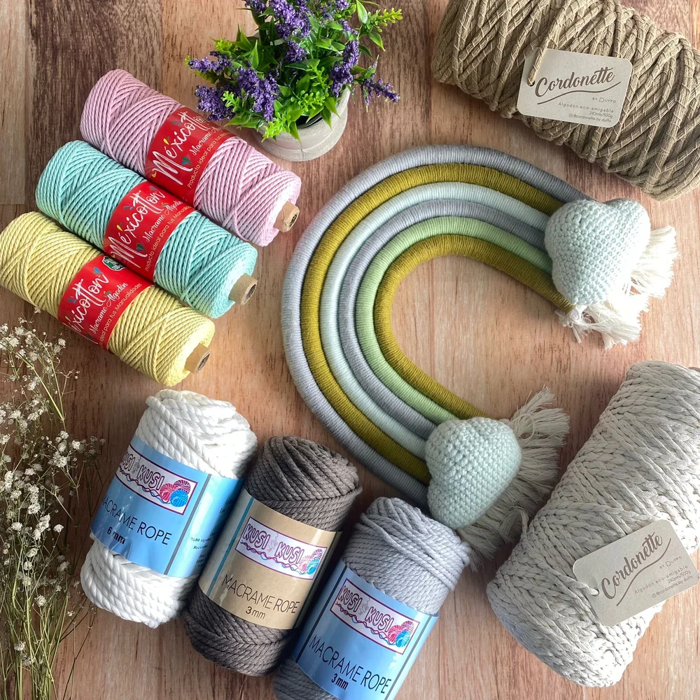

Amigurumis
Muñecos, animalitos y creaciones tridimensionales tejidas a crochet con detalles bordados.
Ir a AmigurumisEn AMIGURI creamos amigurumis llenos de ternura, flores tejidas que nunca se marchitan y prendas a crochet diseñadas con dedicación.

Haz clic en cualquiera de las tarjetas o en el menú superior para navegar por todo el sitio.
Muñecos, animalitos y creaciones tridimensionales tejidas a crochet con detalles bordados.
Ir a AmigurumisGirasoles, tulipanes, rosas y ramos eternos tejidos a mano para regalar o decorar.
Ir a FloresCárdigans, tops, gorros y accesorios tejidos a crochet con estilo artesanal y moderno.
Ir a PrendasCada pieza se elabora con tiempo, paciencia y prolijidad, cuidando cada punto y cada terminación.
Visitá Amigurumis, Flores o Prendas para ver los modelos disponibles.
Definí colores, detalles o medidas en la sección de Contacto.
Escribinos directo por WhatsApp para confirmar tu pedido.